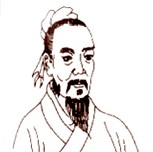
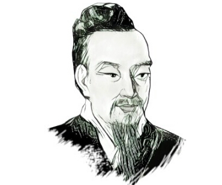
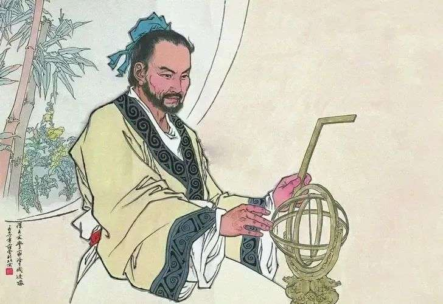
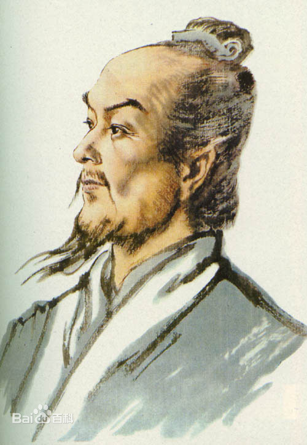
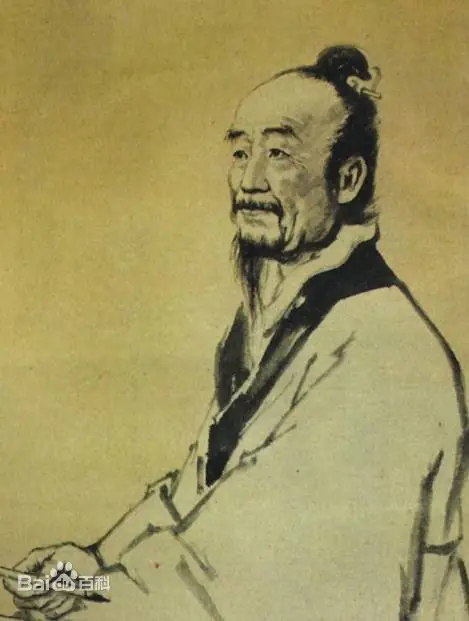

中国古代数学家
中华数学之流，自古蜿蜒而下，其源远洋洋，穿越纪元，波澜壮阔。
古往今来，数学家以他们非凡的智慧和不屈的探索精神，为民族的福祉、社会生产力的增长竭尽心力，不断追求宇宙至理。
他们的贡献，既是对古代文明发展的巨大推进，亦向世界数学宝库中添入了宝贵的财富。
正是这些心怀天下、勇攀高峰的先贤，如同夜空中最灿烂的星辰，照亮了知识的征途。
萌芽
数学萌芽时期
山里的春天，比山下晚一个月， 不论枣树梨树还是牡丹，都还在萌芽状态， 一眼望去，周围都是金绿的芽点， 金绿的点子散在四面八方，像是散播下一片雾。
山里的春天，比山下晚一个月， 不论枣树梨树还是牡丹，都还在萌芽状态， 一眼望去，周围都是金绿的芽点， 金绿的点子散在四面八方，像是散播下一片雾。
--韩松落
甘德
大约生活于公元前4世纪中期

甘德建立了全天恒星区划命名系统，通过给出星官名称、星数与相对位置，对恒星进行定性的描述。 此外，他还尝试对若干恒星的位置进行定量的测量，这些工作为后来的天文学家提供了重要的参考。
二、行星运动观测与定量研究
甘德长期观测行星运动，并对其进行定量的研究。他发现了火星和金星的逆行现象，并描述了行星从顺行到逆行再到顺行的运动轨迹。 这些观测和研究对于理解行星的运动规律具有重要意义，同时也展示了甘德在数学计算方面的能力。
三、编制星表与天文学专著
甘德与石申合作编制了世界上最早的星表——《甘石星表》，其中收录了大量的恒星和行星数据。 此外，他还撰写了天文学专著《甘石星经》，其中包含了丰富的天文学知识和观测数据。 这些工作不仅展示了甘德在天文学领域的卓越成就，也体现了他在数据处理和数学应用方面的才华。
先秦时期-甘德
一、恒星区划命名与定量测量甘德建立了全天恒星区划命名系统，通过给出星官名称、星数与相对位置，对恒星进行定性的描述。 此外，他还尝试对若干恒星的位置进行定量的测量，这些工作为后来的天文学家提供了重要的参考。
二、行星运动观测与定量研究
甘德长期观测行星运动，并对其进行定量的研究。他发现了火星和金星的逆行现象，并描述了行星从顺行到逆行再到顺行的运动轨迹。 这些观测和研究对于理解行星的运动规律具有重要意义，同时也展示了甘德在数学计算方面的能力。
三、编制星表与天文学专著
甘德与石申合作编制了世界上最早的星表——《甘石星表》，其中收录了大量的恒星和行星数据。 此外，他还撰写了天文学专著《甘石星经》，其中包含了丰富的天文学知识和观测数据。 这些工作不仅展示了甘德在天文学领域的卓越成就，也体现了他在数据处理和数学应用方面的才华。
石申
生卒年不详

石申在天文学方面的贡献，是他与楚人甘德所测定并精密记录下的黄道附近恒星位置及其与北极的距离，是世界上最古的恒星表。相传他所测定的恒星，有138座，共810颗。从唐代《开元占经》中保存下来的石申著作的部分内容看，其中最重要的是标有“石氏曰”的121颗恒星的坐标位置(今本《开元占经》中佚失6个星官的记载)。现代天文学家根据对不同时代天象的计算来验证，表明其中一部分坐标值(如石氏中、外星官的去极度和黄道内、外度等)可能是汉代所测；另一部分(如二十八宿距度等)则确与公元前4世纪，即石申的时代相合。
先秦时期-石申
一、天文学研究石申在天文学方面的贡献，是他与楚人甘德所测定并精密记录下的黄道附近恒星位置及其与北极的距离，是世界上最古的恒星表。相传他所测定的恒星，有138座，共810颗。从唐代《开元占经》中保存下来的石申著作的部分内容看，其中最重要的是标有“石氏曰”的121颗恒星的坐标位置(今本《开元占经》中佚失6个星官的记载)。现代天文学家根据对不同时代天象的计算来验证，表明其中一部分坐标值(如石氏中、外星官的去极度和黄道内、外度等)可能是汉代所测；另一部分(如二十八宿距度等)则确与公元前4世纪，即石申的时代相合。
幼苗
体系形成时期
合抱之木，生于毫末；九层之台，起于累土；千里之行，始于足下。
--老子
落下闳
前156年~前87年

落下闳创制的《太初历》不仅是中国古代天文学的重要里程碑，同时也体现了他在数学领域的深厚功底。在《太初历》中，他精确计算了一年和一月的时间长度，这需要对天文观测数据进行复杂的数学处理和分析。
二、发明“通其率”算法
落下闳发明了被称为“通其率”的算法，这是一种用辗转相除法求渐近分数的方法。这一算法在数学史上具有重要地位，为后来的数学家提供了解决类似问题的有效工具，影响了中国天文数学长达两千年。
三、将二十四节气纳入立法
虽然这主要是天文学方面的成就，但落下闳在将二十四节气纳入《太初历》时，也涉及到了精确的数学计算。他需要确定每个节气的具体时间点，这要求对数学和天文知识有深入的理解和掌握。
西汉时期-落下闳
一、创制《太初历》落下闳创制的《太初历》不仅是中国古代天文学的重要里程碑，同时也体现了他在数学领域的深厚功底。在《太初历》中，他精确计算了一年和一月的时间长度，这需要对天文观测数据进行复杂的数学处理和分析。
二、发明“通其率”算法
落下闳发明了被称为“通其率”的算法，这是一种用辗转相除法求渐近分数的方法。这一算法在数学史上具有重要地位，为后来的数学家提供了解决类似问题的有效工具，影响了中国天文数学长达两千年。
三、将二十四节气纳入立法
虽然这主要是天文学方面的成就，但落下闳在将二十四节气纳入《太初历》时，也涉及到了精确的数学计算。他需要确定每个节气的具体时间点，这要求对数学和天文知识有深入的理解和掌握。
张衡
78年~139年

张衡在数学领域的突出贡献之一是推算出较为精确的圆周率值。他提出圆周率大约是“3.14”多一点，这一成果在当时具有相当高的精度，为后续数学家对圆周率的研究奠定了基础。
二、著写《算罔论》
张衡将他的数学研究成果汇集成《算罔论》一书。尽管该书已经失传，但从历史记载中可以窥见其对数学领域的贡献。该书可能是关于算术通论的著作，展示了张衡在数学方面的深厚造诣。
三、研究立方体与球体体积
张衡在数学上还研究了立方体与球体的体积问题。他探讨了立方体的体积计算方法，并对球的外切立方体积和内接立方体积进行了研究。这些研究不仅丰富了当时的数学理论，也体现了张衡对数学领域深入探索的精神。
东汉时期-张衡
一、提出精确的圆周率值张衡在数学领域的突出贡献之一是推算出较为精确的圆周率值。他提出圆周率大约是“3.14”多一点，这一成果在当时具有相当高的精度，为后续数学家对圆周率的研究奠定了基础。
二、著写《算罔论》
张衡将他的数学研究成果汇集成《算罔论》一书。尽管该书已经失传，但从历史记载中可以窥见其对数学领域的贡献。该书可能是关于算术通论的著作，展示了张衡在数学方面的深厚造诣。
三、研究立方体与球体体积
张衡在数学上还研究了立方体与球体的体积问题。他探讨了立方体的体积计算方法，并对球的外切立方体积和内接立方体积进行了研究。这些研究不仅丰富了当时的数学理论，也体现了张衡对数学领域深入探索的精神。
刘洪
约129年~210年
东汉时期-刘洪
一、珠算发明者刘洪被尊为“珠算之父”，是珠算的早期奠基人。他在公元190年成功地发明了“正负数珠算”，并创造了《正负数歌诀》。这一发明使人们的计算能力得到显著提升，珠算也被誉为中国第五大发明。
二、注释《九章算术》
刘洪对古代数学名著《九章算术》进行了注释，并融入了自己的研究心得。他的注释版本对后世数学家理解和研究《九章算术》提供了重要参考。
三、《乾象历》与天文数学结合
刘洪在数学与天文学的结合方面做出了突出贡献。他撰写的《乾象历》是第一部引进月球运动不均匀性理论的历法，其中涉及大量的数学计算和天文观测。这一成就不仅推动了历法的发展，也展示了刘洪在数学领域的深厚底蕴。
赵爽
约182~250年
东汉末年至三国时期-赵爽
一、勾股定理的证明赵爽在数学上最突出的贡献是勾股定理的证明。他在《周髀算经注》中附录了“勾股圆方图”，通过几何图形和简练的文字，给出了勾股定理的详细证明过程，即“勾股各自乘，并之，为弦实。开方除之，即弦”。这一证明方法被后世称为“赵爽弦图”，在数学史上具有重要地位。
二、奠定重差术基础
赵爽还奠定了重差术的理论基础，这是中国传统数学中计算广远、高深等问题的一种重要测量方法。他对测量日高的理论与方法也进行了一定的创新，显示了他在数学领域的全面探索和深厚知识。
三、提出一元一次方程的求根公式
除了上述贡献外，赵爽还用几何方法发现并列明了一元一次方程的一个求根公式，论证了根与系数之间的重要关系。这一发现为后世的代数学研究提供了重要的启示和参考。
成长
数学发展时期
鹏北海，凤朝阳。又携书剑路茫茫。
鹏北海，凤朝阳。又携书剑路茫茫。
--辛弃疾
刘徽
约225年~约295年

刘徽通过注释《九章算术》，整理中国古代数学体系，使其更加系统化为后世数学家提供了宝贵的学习和研究资料。
二、创立“割圆术”
刘徽通过内接或外切正多边形来逼近圆的面积和周长科学地求出了圆周率π的近似值。
三、提出“牟合方盖”理论
在解决球体积计算问题时，刘徽引入了“牟合方盖”这一几何模型。
四、发展线性方程组解法
刘徽提出了互乘相消法，这是一种比直除法更简便的解法，与现今的线性方程组解法基本一致。
五、著作《海岛算经》
刘徽书中详细阐述了如何利用几何知识来解决实际问题，如测量高度和距离等。
魏晋时期-刘徽
一、整理中国古代数学体系刘徽通过注释《九章算术》，整理中国古代数学体系，使其更加系统化为后世数学家提供了宝贵的学习和研究资料。
二、创立“割圆术”
刘徽通过内接或外切正多边形来逼近圆的面积和周长科学地求出了圆周率π的近似值。
三、提出“牟合方盖”理论
在解决球体积计算问题时，刘徽引入了“牟合方盖”这一几何模型。
四、发展线性方程组解法
刘徽提出了互乘相消法，这是一种比直除法更简便的解法，与现今的线性方程组解法基本一致。
五、著作《海岛算经》
刘徽书中详细阐述了如何利用几何知识来解决实际问题，如测量高度和距离等。
信都芳
生卒年不详
南北朝时期-信都芳
一、恢复律管吹灰候气法信都芳成功恢复了失传的律管吹灰候气法，这是一种通过观测律管中灰烬的变化来预测节气的方法。他的这一成就显示了他在数学和天文学领域的深厚底蕴和创新能力。
二、撰写数学著作
信都芳撰写了多部数学著作，包括《器准》、《乐书》、《遁甲经》、《四术周髀宗》等。这些著作涉及算术、天文历法、乐律等多个领域，展示了他在数学领域的广泛探索和深厚知识。尤其是《器准》一书，记载了浑天仪、地动仪等多种精巧仪器的制作原理和图谱，对于古代科学仪器的发展具有重要意义。
三、推动数学和天文学发展
信都芳在数学和天文学领域的研究和探索，推动了这两个学科的发展。他的著作和成就为后世数学家和天文学家提供了宝贵的参考和启示，对于中国古代科学的进步产生了积极的影响。
甄鸾
生卒年不详
南北朝时期-甄鸾
一、著述《五曹算经》甄鸾所著的《五曹算经》是一部为地方官员撰写的应用数学书。该书解题方法浅显易懂，实用性强，体现了甄鸾在数学应用方面的独到见解。
二、编纂《五经算术》
甄鸾还编纂了《五经算术》，对《尚书》、《诗经》、《周易》、《周礼》、《仪礼》、《论语》、《左传》等儒家经典著作及古籍中与数学有关的地方进行了详细注释。
三、系统研究军事数学
甄鸾是中国数学史上第一位系统研究军事数学的学者。他在《五曹算经》中的兵曹部分，详细探讨了军队给养的计算方法，为古代军事数学的发展奠定了基础。
四、注释并阐发数学经典
除了自己的著述外，甄鸾还对前人的数学书籍进行了系统研究，并对《周髀算经》、《孙子算经》、《张丘建算经》、《夏侯阳算经》、《九章算术》等数学经典进行了注释和阐发。在这些注释中，他不仅解释了原著中的数学问题，还阐述了自己的数学思想和成就。
祖冲之
429年~500年
南北朝时期-祖冲之
一、圆周率的精确计算祖冲之首次将圆周率（π）精确计算到小数点后七位，即3.1415926至3.1415927之间。这一成果在当时具有极高的精度，领先世界数学界数百年。
二、提出“祖率”
祖冲之提出了“祖率”，即圆周率的两个近似分数值：约率22/7和密率355/113。其中，密率355/113的精度非常高，为后来的数学研究和应用提供了重要参考。
三、解决球体积计算问题
祖冲之与儿子祖暅合作，利用“牟合方盖”的方法解决了球体积的计算问题，推导出了正确的球体积公式。这一贡献在几何学领域具有重要意义，推动了数学的发展。
四、制定《缀术》
祖冲之制定了数学著作《缀术》，其中包含了许多精妙的数学理论和解题方法。该书在唐代被列为数学教科书之一，对后世数学家产生了深远影响。
五、创立“缀数之学”
祖冲之在数学领域还创立了“缀数之学”，即研究数学问题的连续性和相互关系。这一学说为后来的数学家提供了全新的研究视角和方法论指导。
祖暅
456年~536年
南北朝时期-祖暅
一、创立球体体积的正确算法祖暅在数学上最显著的贡献是推导出球体体积的正确公式。他在父亲祖冲之的基础上，利用“幂势既同则积不容异”的原理（即等高处截面积相等的两个立体体积相等，后被称为“祖暅原理”），成功解决了球体积的计算问题。
二、提出精确的体积计算原理
祖暅提出的“祖暅原理”是立体几何中的一个重要原理，它指出位于两平行平面之间的两个立体，如果被任一平行于这两平面的平面所截，且两个截面的面积恒相等，则这两个立体的体积相等。这一原理为后来的数学家在体积计算方面提供了有力的工具。
三、修补和发展父亲的数学著作
祖暅还致力于修补和发展他父亲祖冲之的数学著作《缀术》。他在该著作中加入了自己的研究成果，使得这部数学典籍更加完善。同时，他还运用自己创立的球体体积公式和“祖暅原理”，巧妙地证明了书中的一些数学定理。
张丘建
生卒年不详

北魏时期-张丘建
一、《张丘建算经》的创作张丘建撰写了《张丘建算经》这一数学经典，该书不仅体现了张丘建在数学领域的深厚底蕴，也成为后世数学家研究的重要参考文献。
二、提出精确的“百鸡问题”解法
“百鸡问题”是中古时期关于不定方程整数解的典型问题。张丘建在《张丘建算经》中给出了这一问题的精确解法，通过设立两个方程来求解三个未知量，展示了他在解决不定方程方面的卓越才能。这一问题及其解法后来被广泛传播和研究，成为数学史上的一个经典案例。
三、在数学教育方面的贡献
张丘建的数学著作和成就对当时的数学教育产生了深远影响。他的《张丘建算经》被用作数学教育的教材，培养了大量的人才。
四、推动数学理论的发展
张丘建在数学领域的研究不仅关注实际应用，还致力于推动数学理论的发展。他在《张丘建算经》中提出的数学问题和解法，展示了他对数学理论的深入探索和思考。这些贡献为中国古代数学的发展奠定了坚实基础，并影响了后世数学家的研究方向和方法。
王孝通
生卒年不详
唐代-王孝通
一、提出三次方程及其解法王孝通在《缉古算经》中首次提出了三次方程及其解法，这是他在数学领域的重要贡献之一。
二、发展代数与几何理论
他的著作中包含了对代数和几何理论的深入探索和发展，特别是在解决实际问题中所涉及的复杂计算方面。
三、创立“堤积”等体积算法
王孝通在书中提出了“堤积”等体积算法，这些算法在当时被广泛应用于土木工程和水利工程的计算中，显示了其在实际应用中的价值。
四、推动数学教育
他的著作《缉古算经》被列为唐代国子监的算学课本，对于当时的数学教育产生了重要影响，推动了数学知识的传播和普及。
李淳风
602年~670年
唐代-李淳风
一、编定和注释十部算经李淳风在数学方面的重大贡献之一是编定和注释了十部重要的数学著作，这些著作被合称为“算经十书”。这十部算经包括《周髀算经》、《九章算术》、《海岛算经》、《孙子算经》、《夏侯阳算经》、《张丘建算经》、《缀术》、《五曹算经》、《五经算术》和《缉古算术》。这些著作代表了古代数学的辉煌成就，而李淳风的编定和注释工作使得这些珍贵的数学遗产得以传承至今。
二、推动数学教育发展
除了在数学研究方面取得杰出成就外，李淳风还致力于推动数学教育的发展。他曾任国子监算学博士等官职，负责数学教育工作，为培养数学人才做出了重要贡献。他的教学活动和教材编写工作有助于普及数学知识，提高人们的数学素养。
三、提出精确的“缀术”算法
在“算经十书”中，李淳风特别对《缀术》进行了深入的研究和注释。他提出了精确的“缀术”算法，这是一种高深的数学计算方法，用于解决复杂的数学问题。李淳风对“缀术”的研究和贡献，展示了他在数学领域的深厚底蕴和卓越才能。
张遂
683年~727年
唐代-张遂
一、发明自变数不等间距的二次差内插法这是一种在数学计算中非常重要的插值方法，用于处理自变数不等间距的数据。张遂的这一发明在数学史上具有重要意义，为后来的数学家提供了有力的工具。
二、编制《大衍历》
张遂在天文学历方面也有卓越贡献，他编制了《大衍历》，这是一部精确反映太阳、月亮和五星运行规律的历法。在编制过程中，他运用了丰富的数学知识，尤其是三角函数和球面几何。
三、建立正切函数表
在《大衍历》中，张遂还建立了从0°到80°的每度影长与太阳天顶距之间的对应数表，这实际上是世界上最早的正切函数表，对于三角学的发展具有重要意义。
四、测量地球子午线长度
张遂是世界上最早准确测量地球子午线长度的人之一。这一成就不仅在天文学领域具有里程碑意义，同时也需要深厚的数学功底和精确的计算能力。
盛放
数学繁荣时期
一朵孤芳自赏的花只是美丽，一片相互依恃着而怒放的锦绣才是灿烂。
一朵孤芳自赏的花只是美丽，一片相互依恃着而怒放的锦绣才是灿烂。
--席慕容
楚衍
生卒年不详
北宋-楚衍
一、传承与发扬《九章算术》楚衍对《九章算术》这部古代数学经典进行了深入的研究，不仅自己精通其中的算法和数学原理，更重要的是，他将这些知识系统地传授给了学生。通过他的讲解和教导，学生们能够更深入地理解和掌握《九章算术》的精髓，从而使得这部经典得以在北宋时期广泛传播并继续发扬光大。
二、培养杰出数学人才
楚衍在担任数学教育工作期间，培养出了大批杰出的数学人才。他注重因材施教，根据学生的特点和兴趣进行有针对性的指导，使得每个学生都能够在数学领域发挥自己的才华。其中最著名的学生贾宪，在楚衍的悉心指导下，不仅全面继承了楚衍的数学学问，还进一步发扬光大，取得了更高的成就。
三、推动数学教育发展
楚衍的数学教育活动不仅局限于课堂教学，他还积极参与数学教材的编写和数学教育方法的改革。他致力于将复杂的数学问题简化为易于理解的形式，以便学生更好地掌握。同时，他还倡导数学教育要注重实际应用，鼓励学生将数学知识应用于日常生活中，提高解决问题的能力。这些教育理念和方法对于当时的数学教育产生了深远的影响，也推动了数学教育的不断发展和进步。
贾宪
生卒年不详
北宋-贾宪
一、创造“贾宪三角”贾宪在数学上的一大独特贡献是创造了“贾宪三角”，这是一个二项式系数表，能够用来快速计算高次幂的整数部分。这一成就在数学史上具有重要地位，不仅被后世数学家广泛引用，而且至今仍在数学教育和研究中发挥重要作用。
二、提出“增乘开方法”
贾宪还提出了“增乘开方法”，这是一种求高次幂正根的方法。相比传统方法，它更加整齐简捷，且具有程序化特点，使得开高次方运算变得更加高效。
三、著写数学书籍
除了在数学理论上作出重大贡献外，贾宪还著有多部数学书籍，如《黄帝九章算经细草》、《释锁算书》等，虽然部分已经失传，但从留存的资料中可以看出他对数学知识的系统化和普及化所做的努力。这些著作对于推动当时和后世数学的发展起到了积极作用。
四、推动数学教育发展
贾宪不仅在数学理论研究上有突出贡献，他还致力于数学教育的普及和提升。通过自己的教学实践和著作，他传播了先进的数学理念和方法，培养了众多数学人才，对中国古代数学教育的发展产生了深远影响。
刘益
生卒年不详
北宋-刘益
一、提出二次方程式的求根法刘益在大约元丰三年（1080年）完成了《论古根源》这部著作，在其中他提出了二次方程式的求根法，这是他在数学领域的重要贡献之一。
二、推广“增乘开方法”
刘益不仅研究了贾宪的“增乘开方法”，更是成功地将其进一步推广，使之成为求解高次方程的一种普遍解法。这种解法对于系数是正数、负数、整数、小数的一般方程都适用，极大地拓宽了其应用范围。
三、创立带从开方、正负损益之法
刘益在《议古根源》中还创立了带从开方、正负损益之法，这是我国古代数学史上的一项杰出成就。他的这一方法与近代的“鲁菲尼~霍纳法”有着相似之处，显示了他在数学领域的深厚底蕴和创新精神。
四、讨论四次方程问题
除了上述成就外，刘益还讨论了一个四次方程的问题，进一步丰富了他在高次方程领域的研究内容。
沈括
1031年~1095年
北宋-沈括
一、创立“隙积术”这是用来计算诸如累棋、层坛一类堆垛物体体积的公式。这一成就不仅涉及了高阶等差级数的计算，而且在中国数学史上开辟了高阶等差级数研究的方向。
二、提出“会圆术”
这是一种计算圆弧的弦、矢（即弧的高）与弧长之间数量关系的数学公式。通过这一公式，沈括在我国数学史上首次利用弦、矢求出了弧长的近似值。
三、研究杨辉三角形和曲线性质
沈括对杨辉三角形进行了深入研究，并发现了其中的许多规律和性质。此外，他还研究了椭圆、双曲线等曲线的性质，提出了一种解析几何的方法。
四、提出“方程不求根”思想并研究多项式方程解法
在代数学方面，沈括提出了“方程不求根”的思想，即通过变换等方式将复杂方程化简为更简单的方程来求解。同时，他还研究了二次方程、三次方程等多项式方程的解法。
五、发现数论中的新规律并提出素数计算方法
沈括在数论方面也取得了显著成就。他发现了一些有趣的数学规律如完全数、亲和数等，并提出了一种计算素数的方法。
李冶
1192年~1279年
金元时期-李冶
一、创立并发展“天元术”李冶在数学上最为人所知的贡献是创立并发展了“天元术”，这是一种设未知数并列方程的方法。他通过这种方法，研究直角三角形内切圆和旁切圆的性质，将几何问题转化为代数问题，极大地推动了古代数学的发展。
二、撰写《测圆海镜》
李冶于1248年撰写了《测圆海镜》这部数学名著，该书是他对“天元术”的全面总结和深入阐述。在书中，他提出了许多高次方程，最高达六次，并展示了如何用“天元术”来解决这些方程。这部著作对中国古代数学的发展产生了深远影响。
三、创立半符号代数
在《测圆海镜》中，李冶不仅用文字描述方程，还引入了负号和简明的小数记法，从而创立了半符号代数。这种代数的产生，比欧洲早了约300年，显示了李冶在数学领域的卓越创新和前瞻性。
四、推动数学教育
除了在数学研究方面的贡献外，李冶还致力于数学教育的推广。他晚年隐居讲学，传授数学知识，培养了一批数学人才，为古代数学的传承和发展做出了重要贡献。
杨辉
生卒年不详

南宋-杨辉
一、总结民间乘除捷算法杨辉系统总结了民间的乘除捷算法，这些算法在当时广为流传，但缺乏系统的整理和总结。杨辉的工作使得这些算法得以更好地传承和发展，提高了计算的效率和准确性。
二、提出“垛积术”
杨辉在数学领域的一大贡献是提出了“垛积术”，这是一种利用垛（即数字的排列）来进行乘法和除法运算的技巧。通过垛积术，杨辉简化了复杂的乘除运算过程，使之更加高效和直观。
三、揭示纵横图（杨辉三角）规律
杨辉是世界上第一个系统研究纵横图（即杨辉三角）构成规律的数学家。他详细研究了纵横图的性质和规律，并总结出了杨辉三角的递推关系。这一发现在代数学中具有重要意义，为后来人们探索组合数学和概率论提供了基础。
四、著述丰富
杨辉的数学著作丰富多样，包括《详解九章算法》、《日用算法》、《乘除通变本末》、《田亩比类乘除捷法》和《续古摘奇算法》等。这些著作不仅系统总结了当时的数学知识，还推动了数学教育的普及和发展。
秦九韶
1208年~1268年
南宋-秦九韶
一、提出“大衍求一术”秦九韶在数学上的重要贡献之一是“大衍求一术”，即求解一次同余方程组问题的解法。这一方法被后世称为“中国剩余定理”，在数论和代数学中有着广泛的应用。秦九韶的这一成就不仅具有理论价值，也为解决实际问题提供了有效的数学工具。
二、创立“正负开方术”
秦九韶的另一项杰出贡献是“正负开方术”，这是一种求解高次方程数值解的方法。他通过这一方法，能够精确地计算出高次方程的根，无论是有理数还是无理数。这一成就在当时世界数学领域中处于领先地位。
三、系统总结高次方程解法
秦九韶在数学领域还进行了系统性的总结工作，特别是对于高次方程的解法。他不仅在理论上进行了深入的探讨，还通过大量实例详细阐述了高次方程的求解过程。
四、推进实用数学的发展
他将数学知识应用于实际问题中，如天文历法、工程测量等领域。通过数学方法的运用，他解决了一系列实际问题，为当时的社会发展做出了积极的贡献。
朱世杰
1249年~1314年
南宋-朱世杰
一、创造“四元术”朱世杰在数学上最突出的成就之一是创造了“四元术”，即利用四元高次多项式方程来解决问题。他通过设立天、地、人、物四元来表示未知数，并建立了相应的方程解法，为解决复杂数学问题提供了新的思路。
二、著写《算学启蒙》
朱世杰所著的《算学启蒙》是一部重要的数学教科书。全书由浅入深，介绍了从一位数乘法到当时最新数学成果——天元术的内容，形成了一个完整的数学体系。这本书对于普及和推动数学教育的发展起到了重要作用。
三、编写《四元玉鉴》
《四元玉鉴》是朱世杰另一部重要的数学著作，其中详细阐述了“四元术”的理论和应用。这本书不仅在数学上具有很高的价值，同时也对后来的数学家产生了深远的影响，为中国古代数学的发展树立了新的里程碑。
四、提出“招差术”与“垛积法”
除了“四元术”外，朱世杰还提出了“招差术”（高次内插法）和“垛积法”（高阶等差数列求和法）。这两种方法在数学分析和计算中具有广泛的应用，为解决实际问题提供了新的数学工具。
凋零
数学衰退时期
花开如火，也如寂寞。
花开如火，也如寂寞。
--顾城
吴敬
生卒年不详
明代-吴敬
一、撰写《九章算法比类大全》吴敬在1450年完成了这部杰作，该书对程大位《算法统宗》以及明中叶以后的数学产生了深远影响，基本代表了明初百年间数学发展的水平。
二、普及珠算算法
他的《九章算法比类大全》中最早记载了珠算，并附有原始的珠算口诀，对珠算的普及和应用起到了重要推动作用。
三、传承和发展古代数学
在《九章算法比类大全》中，吴敬不仅体现了古代经典《九章算术》的规范作用，还记录了明代初兴的商业算术的本来面貌，传承并发展了古代数学。
四、推动数学实用化
他的著作中涉及的应用问题解法，既反映了当时社会经济、手工业和商业发展的情况，也体现了数学在解决实际问题中的重要作用。
王文素
生卒年不详
明代-王文素
一、创作《算学宝鉴》王文素所著的《新集通证古今算学宝鉴》（简称《算学宝鉴》）是其数学成就的集大成者，该书成书于明正德八年（1513年），增订于嘉靖三年（1524年），全书分12本42卷，近50万字，是一部博大精深的古典数学巨著。
二、领先的高次方程解法
在《算学宝鉴》中，王文素研究了一元高次代数方程的数值解法，内容详实可靠，显示了他在这一领域的深厚功底。
三、微积分导数的发现
王文素在解高次方程的过程中，实际上已经发现了微积分中的导数概念，并进行了应用，这一成就领先于欧洲数学家多年。
四、纵横图（幻方）的研究
王文素对数字排列组合的纵横图进行了深入研究，如连环图、缨络图、三同六变图等，其复杂程度远超前代数学家，是中国古典数学书中的瑰宝。
五、批判并发展传统数学
王文素在《算学宝鉴》中对当时见到的数学著作及民间算法、算题进行了“留心通证”，明确指出原书之谬，同时提出了自己的见解和创新，推动了数学的发展。
程大位
1533年~1606年
明代-程大位
一、编纂巨著《算法统宗》程大位历经二十年心血，编纂了数学巨著《算法统宗》。该书集录了古代流传的595道数学难题及解法，堪称16至17世纪中国数学领域的集大成之作，对后世影响深远。
二、确立珠算规则与口诀
在《算法统宗》中，程大位详细阐述了传统的珠算规则，完善了珠算口诀，使得珠算的学习与应用更加规范化、系统化。
三、创造性贡献“丈量步车”
程大位发明了世界上第一卷尺——“丈量步车”，因此被誉为“卷尺之父”。这一发明极大地推动了测量技术的发展。
四、提出“定位法”在珠算中的应用
程大位在珠算中广泛应用了定位法，并编写了“定位总歌”，解决了乘法和除法的定位问题，进一步提升了珠算的实用性和准确性。
五、珠算开带从平方和开带从立方
程大位还创造性地用珠算解决了正系数数字二次方程和三次方程的求根问题，展示了珠算在解决复杂数学问题中的强大能力。
朱载堉
1536年~1611年
明代-朱载堉
一、创立一种求解高次方程根的方法通过将复杂问题转化为较简单的问题来求解，极大地提高了方程求解的效率。
二、几何学贡献
朱载堉在平面几何和立体几何方面都有重要研究成果，他提出了一种将几何问题转化为代数问题的新方法，为后来的数学家提供了启发。
三、数论研究
他在数论领域也有显著建树，研究了数论中的一些基本理论，并给出了创新的证明方法，扩展了数论的范畴。
四、珠算开方
朱载堉是第一个运用珠算进行开方计算的人，他提出了相应的珠算口诀，使得复杂的数学运算变得更加简便。
五、不同进位数的换算
他解决了不同进位数的换算问题，包括九进制、十进制等之间的转换，为数学计算提供了便利。
徐光启
1562年~1633年
清代-徐光启
一、翻译《几何原本》徐光启与利玛窦合作，共同翻译了欧几里得的《几何原本》前六卷。这是中国古代数学史上的一次重大引进，极大地推动了中国数学的发展，并影响了后世数学家的研究方向。
二、提出“度数之学”
徐光启强调数学在实际应用中的重要性，提出了“度数之学”的思想。他主张将数学应用于天文、历法、水利、音律等多个领域，以解决实际问题。
三、撰写《勾股义》和《测量异同》
徐光启在勾股定理和测量方面有着深入的研究，他撰写了《勾股义》和《测量异同》两部著作，详细阐述了勾股定理的原理和应用，以及测量技术的差异和共通之处。
四、推动数学教育改革
作为教育家，徐光启致力于推动数学教育改革。他主张以实践为基础的教学方法，注重培养学生的逻辑思维能力和解决实际问题的能力。他的教育理念对后世的数学教育产生了深远的影响。
梅文鼎
1633年~1721年
清代-梅文鼎
一、撰写数学著作《方程论》这是梅文鼎早期的数学作品，对方程理论进行了系统的阐述。
二、提出“求周径密率捷法”和“求弦矢捷法”
这两种方法分别用于精确计算圆的周长和直径比例（即π值）以及求解与弦相关的问题，简化了计算过程。
三、融会贯通中西方数学
梅文鼎不仅深入研究了中国传统数学，还吸收了西方数学知识，将两者融会贯通，推动了中西方数学文化的交流与发展。
四、著作丰富
包括《平三角举要》、《弧三角举要》、《环中黍尺》等：这些著作涵盖了平面三角学、球面三角学以及几何学等多个领域，对后世产生了深远影响。
李善兰
1811年~1882年
清代-李善兰
一、创立二次平方根的幂级数展开式李善兰在数学分析中取得了重要突破，他创立了二次平方根的幂级数展开式，为后来的数学研究提供了有力工具。
二、研究三角函数、反三角函数和对数函数的幂级数展开式
李善兰对这些函数的幂级数展开式进行了深入研究，为数学领域提供了新的理论基础。
三、创立“尖锥术”理论
他在《方圆阐幽》《弧矢启秘》《对数探源》等著作中详细阐述了“尖锥术”理论，这是一种处理代数问题的几何模型，实质上相当于给出了直线、抛物线等方程的解法。
四、提出“李善兰恒等式”
利用“垛积术”推导出著名的“李善兰恒等式”，这是世界上第一个以中国人名字命名的数学公式，显示了他在数学领域的卓越贡献。
五、创立科学名词
李善兰还创译了大量科学名词，如代数学、函数、几何学、微积分等，这些名词不仅在中国流传下来，还对国际科学界产生了深远影响。
未尽
未完待续
卅载光阴弹指过，未应磨染是初心。
卅载光阴弹指过，未应磨染是初心。
--叶嘉莹